Open · due Mar 6
01 · Grant · up to $50K
Rural Cooperative Grants
For rural co-ops starting up, converting to member ownership or growing.
How to apply →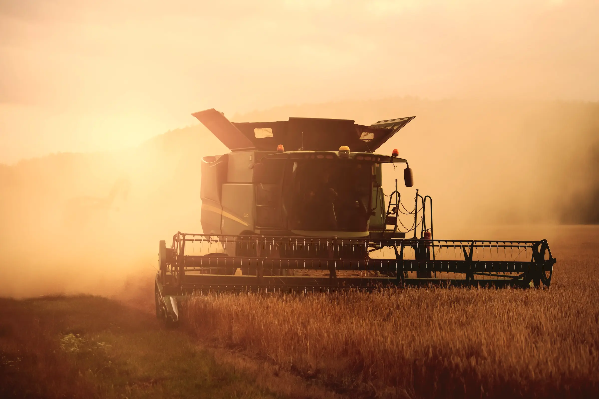
Cooperative FundEst. 1945Grants · Leadership · Place
We fund and train the people building cooperatives across America, so the wealth they create stays with the people who create it.
01 / Why cooperatives
A cooperative is a business owned by the people it serves. Farmers share an elevator. Caregivers own their agency. Tenants buy their building. We help them start, grow and lead, so more of America is owned by the people who live here.
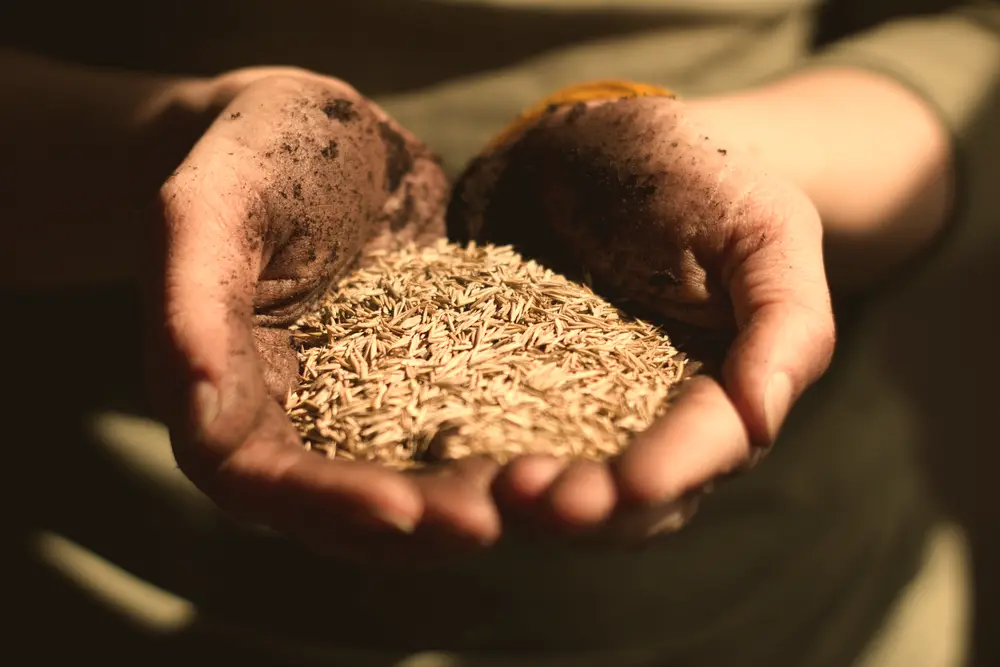
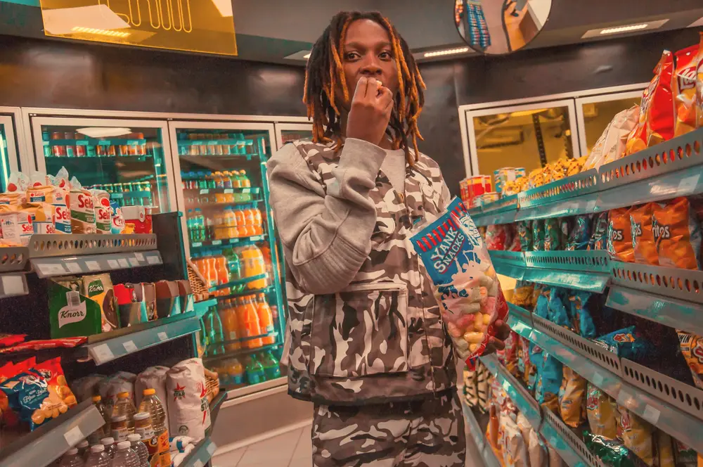
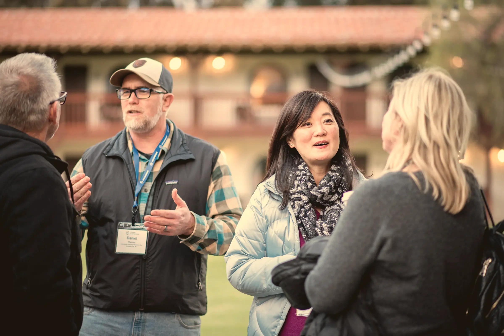
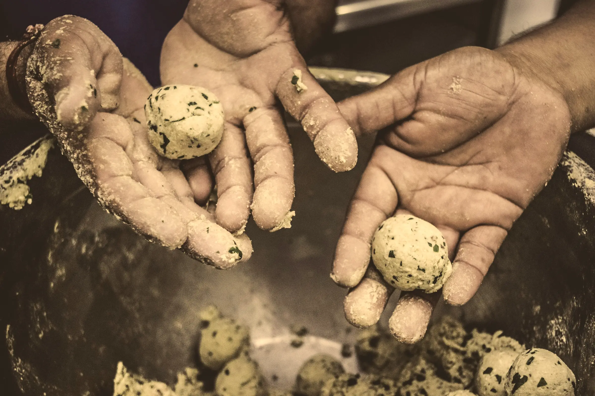
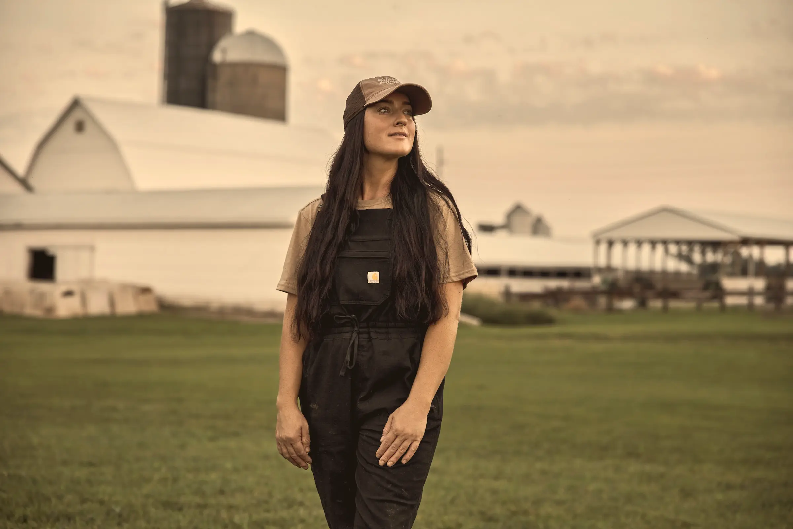
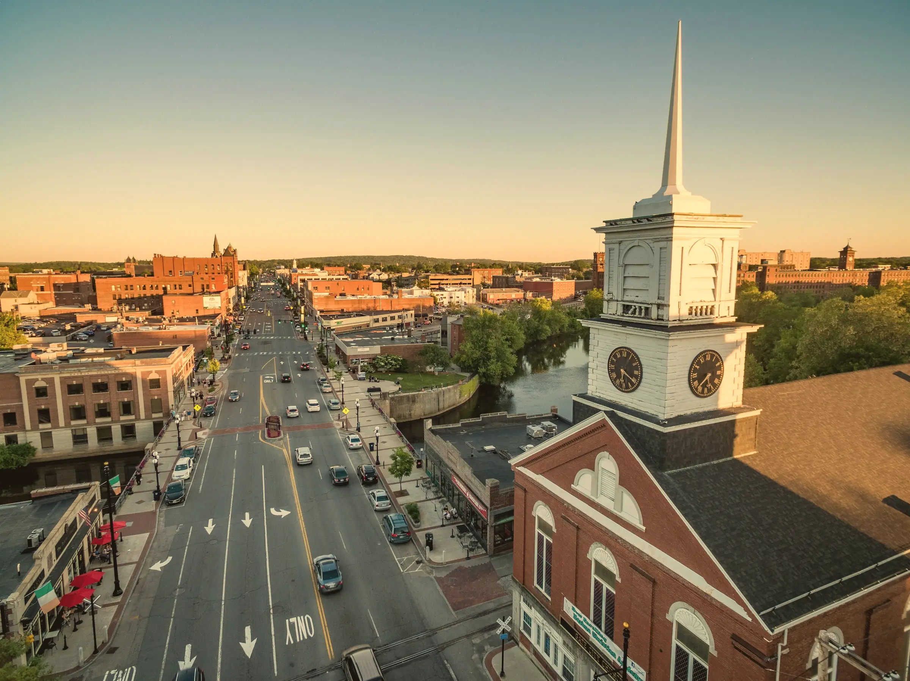
02 / It starts
A fair price for their crops. A good job caring for elders. A home no landlord can sell out from under them.
03 / They pool
Our grants and advisors help them write bylaws, raise member capital and open the doors.
04 / They own
Our leadership fellows learn to run the business, govern well and train the next generation.
05 / It stays
Profits return to members and their towns, year after year, instead of leaving for good.
06 / Find your path
07 / Grants & programs
For rural co-ops starting up, converting to member ownership or growing.
How to apply →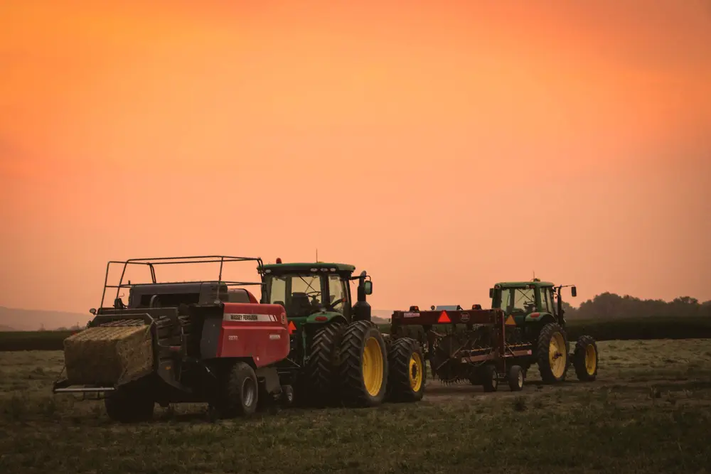
Open year-roundFast help for co-ops and their members after floods, fires and storms.
Request help →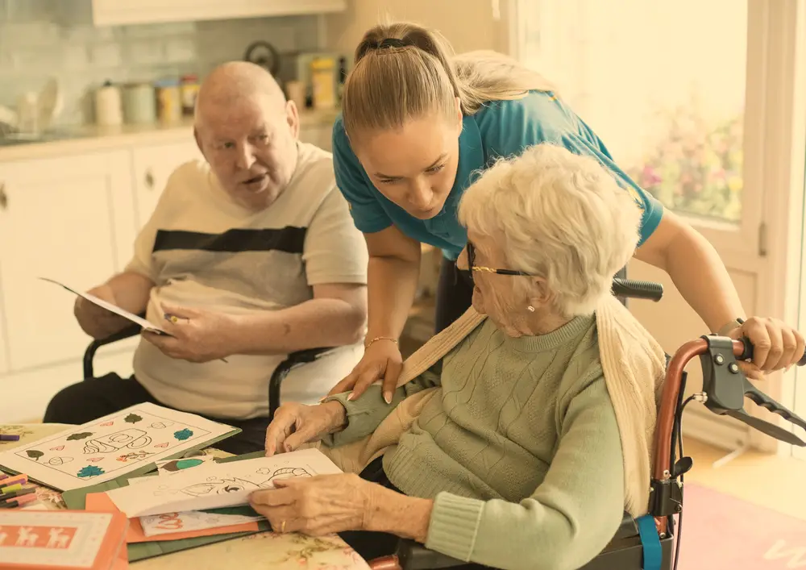
Reopens fallCaregiver-owned agencies that raise wages and keep elders at home.
See grantees →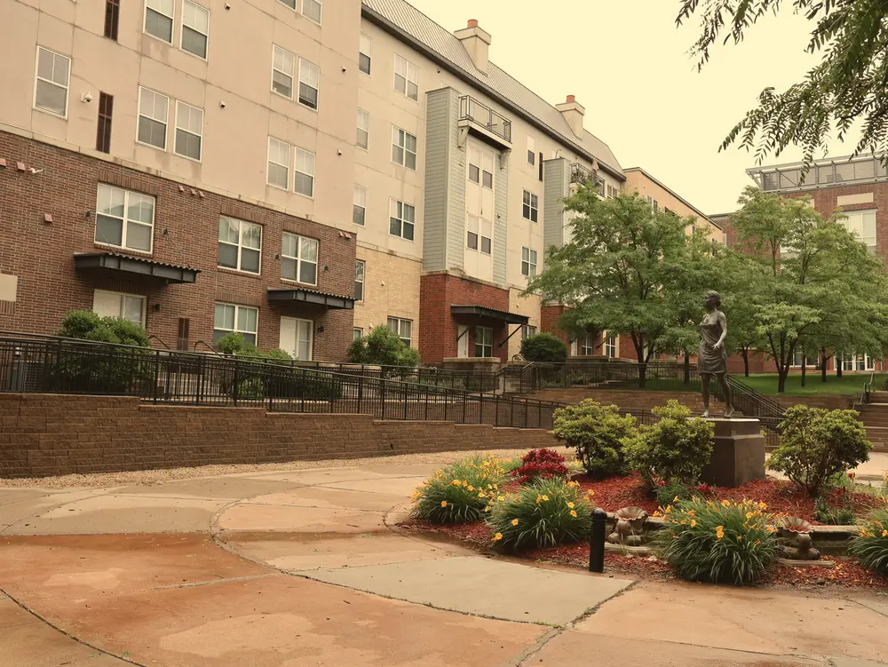
Open · due Apr 17Helping tenants and residents buy and run their communities together.
How to apply →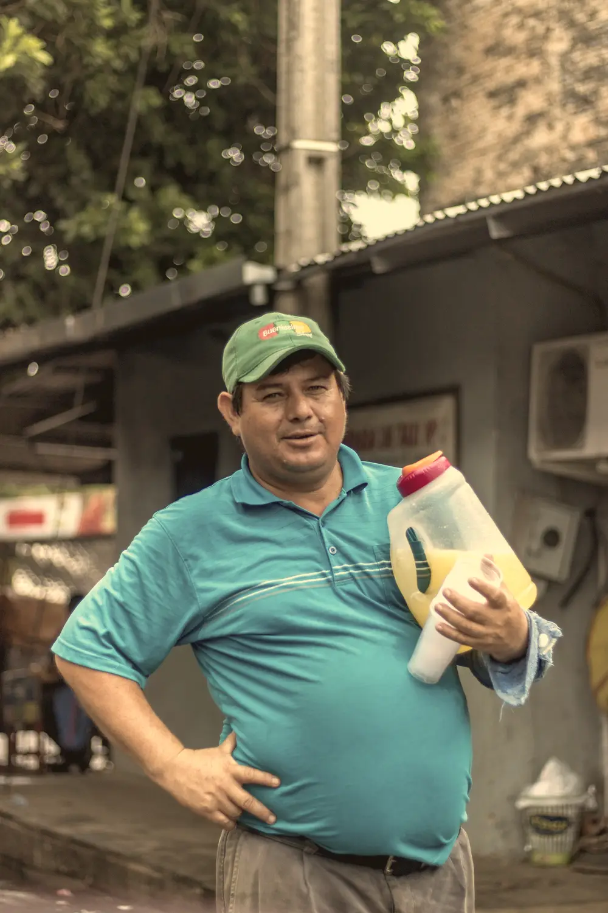
Open · due May 1Helping retiring owners sell to the people who already run the business.
How to apply →A 12-month cohort with mentors, travel and a capstone project.
Learn more →08 / Since 1945
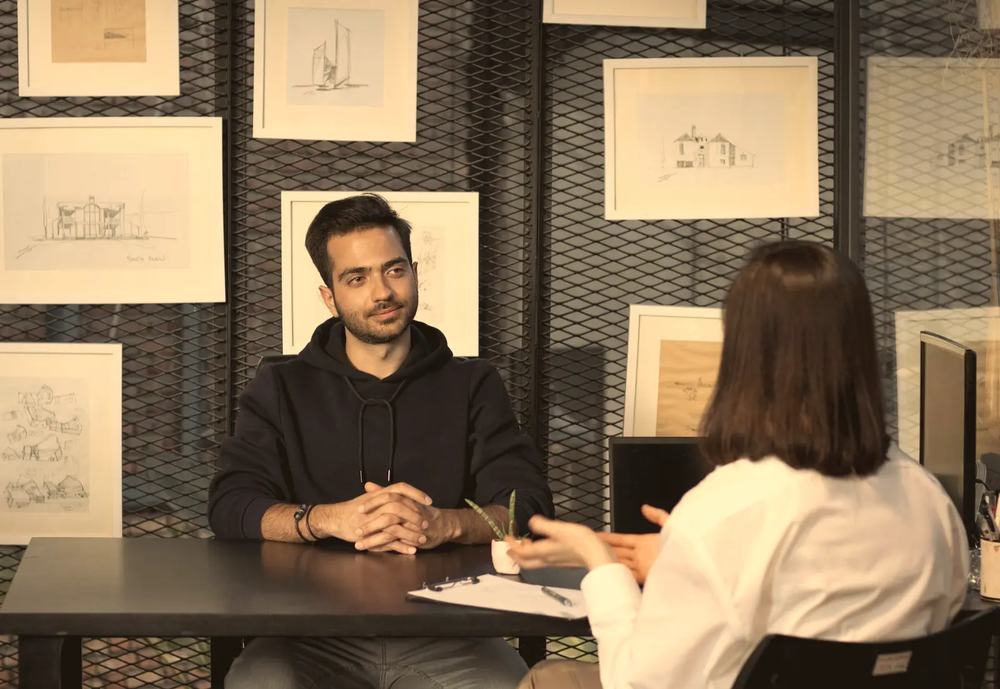
“None of us could afford the equipment alone. Together, we own it outright.”
09 / Cooperative Hall of Fame
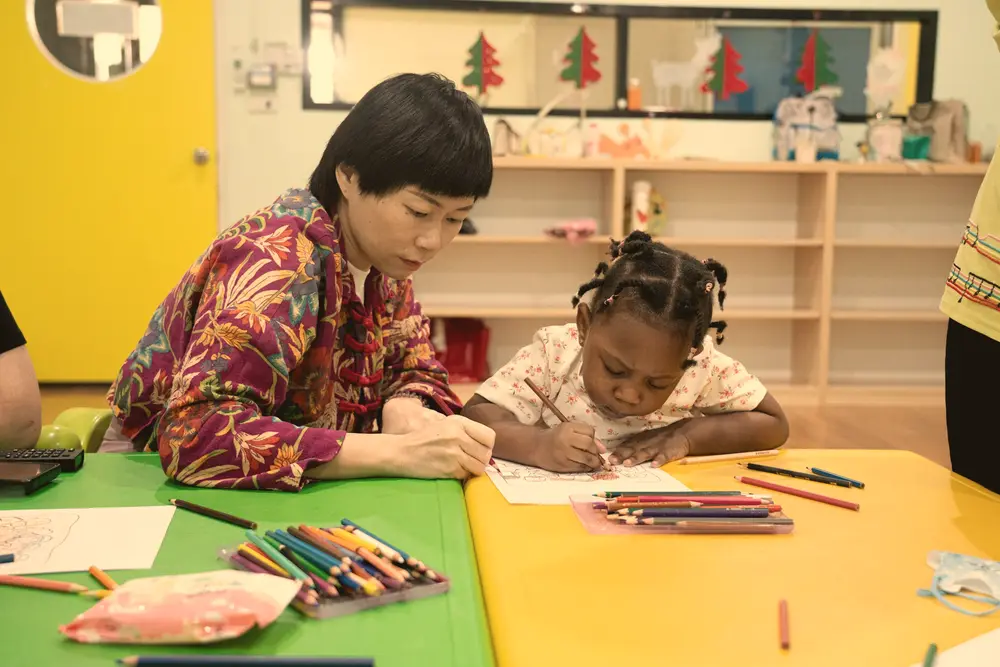
10 / News & stories
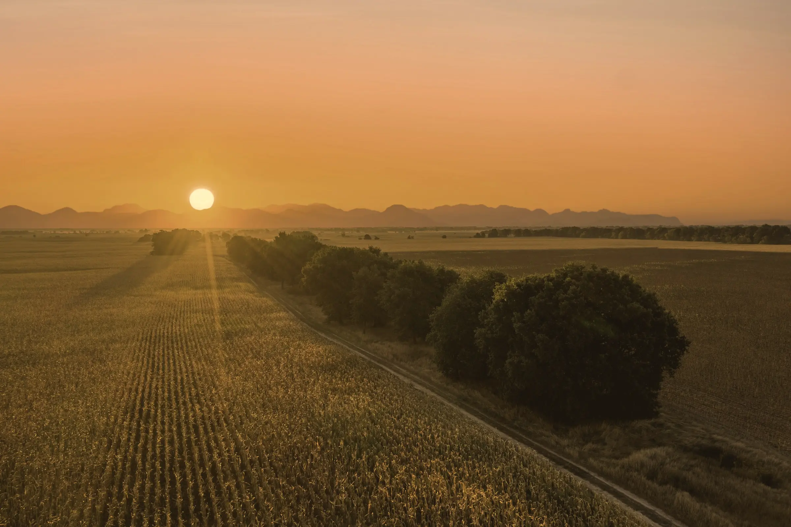
11 / Give